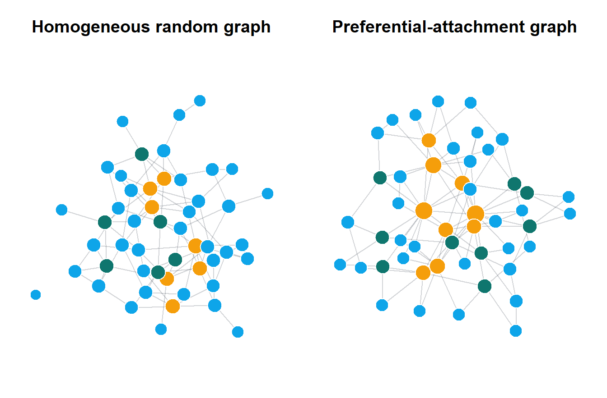
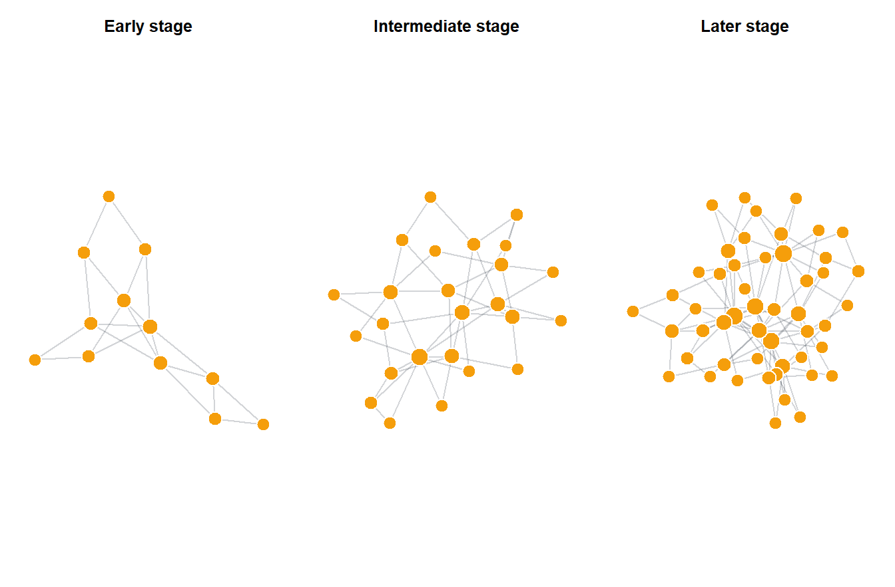
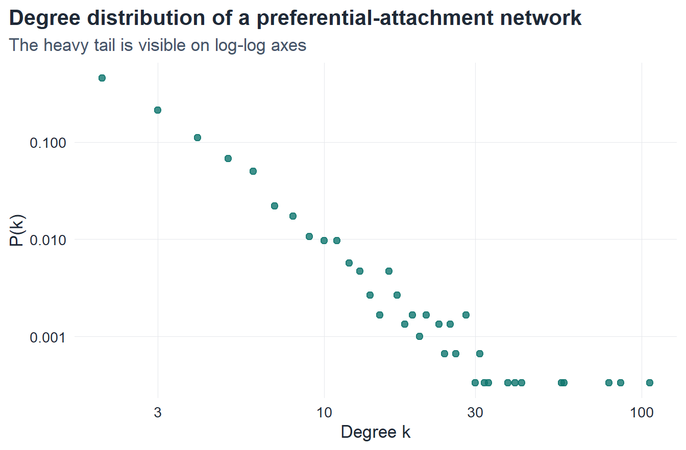
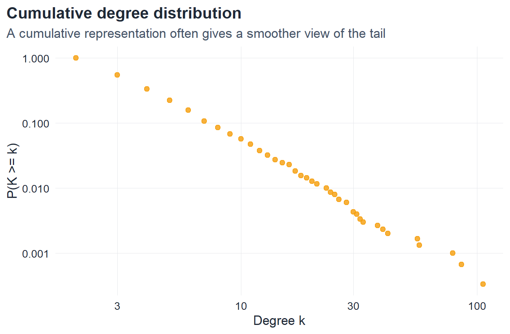
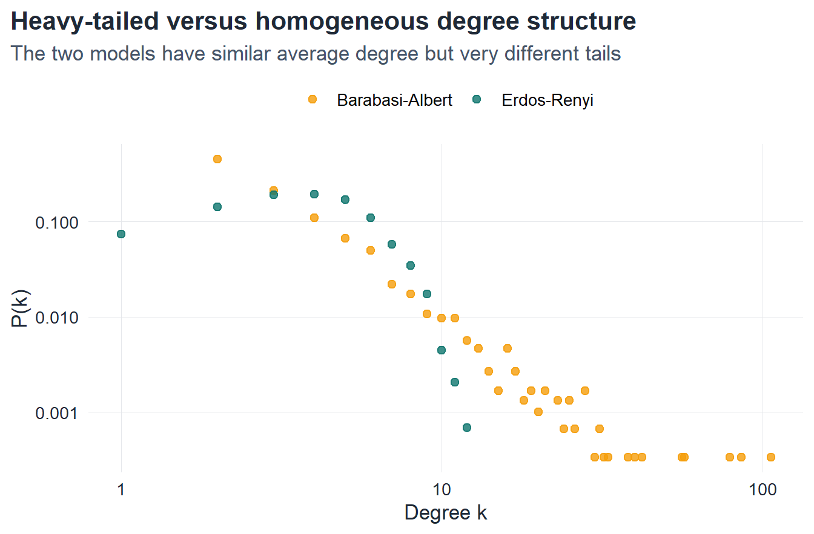

5 Scale-Free Networks
5.1 Introduction
The Erdős–Rényi model and the Watts–Strogatz model explain important aspects of network structure, but many real systems display a feature that neither model captures naturally: the existence of a small number of highly connected vertices, usually called hubs.
Examples include:
- highly cited scientific papers,
- very popular web pages,
- airports with exceptionally high traffic,
- social actors with unusually many connections.
In such systems, degree is not concentrated around a typical value. Instead, the degree distribution is strongly heterogeneous. Most vertices have small degree, but a few vertices have extremely large degree. This broad distribution is one of the defining signatures of a scale-free network.
The purpose of this chapter is to study the mathematical meaning of scale-free behavior and the mechanism by which it can arise. The central model is the Barabási–Albert model, which combines two key ingredients:
- growth,
- preferential attachment.
Together they generate networks with heavy-tailed degree distributions and hub formation.
5.2 Learning goals
By the end of this chapter, it should be possible to:
- define degree heterogeneity and hub structure
- define a power-law degree distribution
- explain what is meant by a scale-free network
- define preferential attachment mathematically
- describe the Barabási–Albert model
- explain why preferential attachment leads to hub formation
- verify scale-free behavior numerically in
R
5.3 Broad degree distributions and hubs
Degree heterogeneity
A first step toward scale-free structure is to understand that degree distributions need not be concentrated around one typical value.
In a homogeneous network, most vertices have degree values of roughly the same order, and the distribution is relatively narrow. By contrast, in a heterogeneous network, degree values span many scales.
Definition 5.1 A network is said to exhibit degree heterogeneity if its degree distribution is broad, in the sense that vertices of very different degree coexist in significant numbers.
This definition is qualitative, but it captures an essential structural distinction. In a heterogeneous network, one cannot meaningfully describe the graph using only a “typical” degree.
Hubs
Definition 5.2 A hub is a vertex whose degree is substantially larger than the degrees of most other vertices in the same network.
The notion of a hub is relative to the graph under consideration. A vertex of degree 20 may be a hub in one network and completely ordinary in another.
The significance of hubs is not merely visual. They strongly influence:
- shortest paths,
- robustness,
- spreading processes,
- centralization of connectivity.
So the appearance of hubs is one of the main reasons why scale-free networks differ from more homogeneous random graphs.
Visual contrast: homogeneous and heterogeneous degree structure
The comparison above illustrates the basic distinction:
- in a homogeneous random graph, vertex degrees tend to lie in a relatively narrow range
- in a preferential-attachment graph, a few vertices accumulate much larger degree and emerge as hubs
This does not yet prove a power law, but it motivates the need for a more precise mathematical description.
5.4 Power-law degree distributions
Definition of a power law
Definition 5.3 A degree distribution is said to follow a power law if, for sufficiently large degree k,
P(k) \sim Ck^{-\gamma},
where C>0 is a constant and \gamma > 0 is the degree exponent.
The notation \sim means asymptotic proportionality. More precisely,
\lim_{k \to \infty} \frac{P(k)}{Ck^{-\gamma}} = 1.
So a power law describes the tail behavior of the degree distribution.
Why the term “scale-free” is used
Suppose
P(k) \sim Ck^{-\gamma}.
Then for any scaling factor a>0,
P(ak) \sim C(ak)^{-\gamma} = a^{-\gamma} Ck^{-\gamma}.
So changing the scale of k only multiplies the distribution by a constant factor. There is no preferred characteristic scale in the tail. This is the reason for the term scale-free.
Definition 5.4 A network is called scale-free if its degree distribution has a power-law tail over a substantial range of degrees.
This definition should be interpreted with care. In applications, one usually does not expect a perfect power law over all degrees. What matters is that the tail decays approximately as a power law over a meaningful interval.
Cumulative distribution
In empirical work it is often useful to consider the cumulative degree distribution
P(K \geq k).
If
P(k) \sim Ck^{-\gamma},
then the cumulative distribution satisfies
P(K \geq k) \sim C' k^{-(\gamma-1)}
for large k, provided \gamma > 1.
This representation is often smoother numerically and easier to visualize on a log-log scale.
5.5 Preferential attachment
The central mechanism behind the Barabási–Albert model is preferential attachment.
Definition 5.5 A growing network is said to evolve by preferential attachment if the probability that a new vertex connects to an existing vertex i is proportional to the degree of i.
If the degree of vertex i at time t is denoted by k_i(t), then preferential attachment takes the form
\Pi_i(t) = \frac{k_i(t)}{\sum_j k_j(t)}.
This means that highly connected vertices are more likely to receive new links. In informal language, “the rich get richer.”
Interpretation
Preferential attachment is not merely a mathematical trick. It encodes a plausible dynamic for many real systems.
- a popular web page is more likely to attract new links,
- a highly cited article is more likely to receive future citations,
- a well-connected airport is more likely to gain new routes,
- a socially visible person is more likely to form further connections.
So preferential attachment captures a cumulative-advantage mechanism.
NoteKey result: preferential attachment rule
In a growing network with preferential attachment, the probability that a new vertex connects to existing vertex i is
\Pi_i(t) = \frac{k_i(t)}{\displaystyle\sum_j k_j(t)}.
Since \sum_j k_j(t) = 2L(t), this simplifies to \Pi_i(t) = k_i(t) / 2L(t). A vertex with twice the degree is twice as likely to receive a new edge.
Why preferential attachment matters
If edges were added uniformly at random to existing vertices, the graph would not generate strong hub structure in the same way. Preferential attachment amplifies pre-existing degree differences.
Once a vertex gains an advantage, it becomes more likely to gain future links, which can strengthen the advantage further. This feedback is the source of hub formation.
5.6 The Barabási–Albert model
Definition 5.6 The Barabási–Albert model is defined by the following growth rule:
- begin from a connected seed graph,
- at each time step add one new vertex,
- connect the new vertex to m existing vertices,
- choose each target vertex with probability proportional to its degree.
The model therefore combines two ingredients:
- growth: the number of vertices increases over time
- preferential attachment: attachment probability is degree-proportional
Both ingredients are essential. Growth alone does not produce scale-free structure, and preferential choice without growth does not generate the same degree dynamics.
Average degree in the BA model
At each time step, one new vertex and m new edges are added. For large network size, the average degree tends to
\langle k \rangle \approx 2m.
This follows from the fact that each new edge contributes 2 to the total degree and that the number of edges grows linearly with the number of added vertices.
So the parameter m controls the density of the graph.
5.7 Growth of a preferential-attachment network
The next figure illustrates the evolution of a Barabási–Albert network as new vertices are added.

This figure shows the central mechanism of the model:
- early fluctuations matter,
- some vertices acquire an advantage early,
- that advantage is amplified over time,
- hubs gradually emerge.
So the model does not treat all vertices symmetrically across time. Age and accumulated degree both influence network structure.
5.8 Degree distribution in the BA model
A classical result for the Barabási–Albert model is that the degree distribution follows a power law with exponent
\gamma = 3.
More precisely, in the asymptotic limit,
P(k) \sim Ck^{-3}.
This means that the degree distribution is heavy-tailed: high-degree vertices are rare, but much more common than in models with exponentially decaying tails.
Consequences of a heavy tail
The power-law form has several important structural implications.
- Most vertices have small degree.
- A few vertices may have very large degree.
- There is no narrow characteristic degree scale in the tail.
- Hub structure becomes a natural outcome of the dynamics.
This is what makes scale-free networks qualitatively different from Erdős–Rényi random graphs, whose degree distributions are much more concentrated.
ImportantClassical result: BA degree distribution
The Barabási–Albert model with parameter m produces a power-law degree distribution with exponent \gamma = 3:
P(k) \sim C k^{-3}, \qquad k \gg m.
This result is independent of m. The parameter m controls the density (\langle k \rangle \approx 2m) but not the tail exponent. Heavy tails are an inevitable consequence of the growth-plus-preferential-attachment mechanism.
5.9 Numerical exploration
Degree distribution of a BA network
set.seed(2040)
n_ba <- 3000
m_ba <- 2
g_ba_large <- sample_pa(n = n_ba, power = 1, m = m_ba, directed = FALSE)
deg_ba <- degree(g_ba_large)
deg_tbl <- tibble(k = deg_ba) |>
count(k, name = "count") |>
filter(k > 0) |>
mutate(
prob = count / sum(count)
)
deg_tbl# A tibble: 37 × 3
k count prob
<dbl> <int> <dbl>
1 2 1361 0.454
2 3 635 0.212
3 4 331 0.110
4 5 202 0.0673
5 6 150 0.05
6 7 66 0.022
7 8 52 0.0173
8 9 32 0.0107
9 10 29 0.00967
10 11 29 0.00967
# ℹ 27 more rowsggplot(deg_tbl, aes(x = k, y = prob)) +
geom_point(color = course_cols$teal, size = 2.0, alpha = 0.8) +
scale_x_log10() +
scale_y_log10() +
labs(
title = "Degree distribution of a preferential-attachment network",
subtitle = "The heavy tail is visible on log-log axes",
x = "Degree k",
y = "P(k)"
)
This plot does not by itself prove a power law, but it shows the heavy-tailed structure clearly. The tail decays much more slowly than the binomial or Poisson degree distributions seen in homogeneous random graphs.
Cumulative degree distribution

The cumulative distribution is often smoother than the raw degree histogram and is therefore useful when investigating heavy-tailed behavior.
5.10 Comparison with Erdős–Rényi graphs
A direct comparison with an Erdős–Rényi graph having approximately the same average degree helps clarify the difference in degree structure.

The contrast is the essential one:
- the Erdős–Rényi graph has a narrow degree distribution,
- the Barabási–Albert graph has a broad heavy-tailed degree distribution.
This is the mathematical signature of hub formation.
5.11 Why scale-free structure is important
Scale-free structure matters because degree heterogeneity strongly affects network behavior.
Paths and centralization
Hubs can act as highly efficient bridges. They reduce many shortest paths and create strong centralization of flow.
Robustness and vulnerability
A network with hubs may be tolerant to random deletion of vertices, because most randomly chosen vertices are low-degree. But it may be highly vulnerable to targeted removal of hubs.
Spreading processes
Infections, information, or cascades can spread differently in hub-dominated networks than in homogeneous graphs, because hubs can act as powerful transmission centers.
So the shape of the degree distribution is not merely descriptive. It has dynamical consequences.
5.12 Core formulas to remember
ImportantSummary
For scale-free networks and the Barabási–Albert model:
Preferential attachment probability: \Pi_i(t) = \frac{k_i(t)}{\displaystyle\sum_j k_j(t)} = \frac{k_i(t)}{2L(t)}
Average degree in the BA model: \langle k \rangle \approx 2m
Power-law degree distribution: P(k) \sim C k^{-\gamma}, \qquad \gamma = 3 \text{ for the BA model}
Scale-free property: P(ak) = a^{-\gamma} P(k) \quad \text{for all } a > 0
Cumulative tail: P(K \geq k) \sim C' k^{-(\gamma - 1)}
Degree distribution comparison:
| Model | Degree distribution | Typical form |
|---|---|---|
| G(N,p) | Binomial / Poisson | narrow, peaked |
| Watts–Strogatz | Near-Poisson | narrow, peaked |
| Barabási–Albert | Power law | heavy-tailed, hub-dominated |
5.13 In-class questions
- Why does a broad degree distribution imply that average degree alone is insufficient to describe the graph?
- What is the difference between a heavy-tailed degree distribution and a narrow one?
- Why does preferential attachment lead naturally to hub formation?
- Why are growth and preferential attachment both essential in the BA model?
- Why does a scale-free network differ structurally from an Erdős–Rényi graph even when their average degrees are similar?
5.14 End-of-chapter exercises
The exercises below are divided into three groups:
- mathematical exercises,
- conceptual and analytical exercises,
- simulation and coding exercises.
Part I. Mathematical exercises
Exercise 1. Average degree in the BA model
In the Barabási–Albert model, one new vertex and m new edges are added at each time step.
- Let N be the number of vertices after many growth steps. Show that the total number of edges is approximately proportional to mN.
- Deduce that the average degree is approximately \langle k \rangle \approx 2m.
- Explain why this approximation becomes accurate for large N.
Exercise 2. Preferential-attachment probability
Suppose the degree of vertex i at time t is k_i(t).
- Explain why the preferential-attachment rule can be written as \Pi_i(t)=\frac{k_i(t)}{\sum_j k_j(t)}.
- Show that \sum_i \Pi_i(t)=1.
- Interpret this expression probabilistically.
Exercise 3. Power-law scaling
Assume that the degree distribution satisfies
P(k)\sim Ck^{-\gamma}.
- Show that P(ak)\sim a^{-\gamma}P(k) for every fixed a>0.
- Explain why this motivates the term scale-free.
- Discuss why such a distribution does not possess a single characteristic tail scale.
Exercise 4. Cumulative power-law tail
Assume that
P(k)\sim Ck^{-\gamma}
with \gamma>1.
Show heuristically that the cumulative tail satisfies
P(K\ge k)\sim C'k^{-(\gamma-1)}.
Explain why cumulative distributions are useful in empirical analysis.
Exercise 5. Hub interpretation
Let k_{\max} denote the largest observed degree in a graph.
- Explain why a graph with narrow degree distribution typically has moderate k_{\max}.
- Explain why a heavy-tailed degree distribution allows much larger hub degrees.
- Discuss why hub formation is a consequence of broad degree heterogeneity.
Exercise 6. BA exponent
A classical result for the Barabási–Albert model is
P(k)\sim Ck^{-3}.
Explain the meaning of this statement and discuss how it differs conceptually from the binomial or Poisson degree laws encountered in earlier chapters.
Part II. Conceptual and analytical exercises
Exercise 7. Growth versus static models
Write a short analytical comparison between:
- the Erdős–Rényi model,
- the Watts–Strogatz model,
- the Barabási–Albert model.
Your answer should address: - whether the model is static or growing, - whether degree distribution is narrow or broad, - whether clustering is naturally high, - whether hubs appear naturally.
Exercise 8. Why preferential attachment creates hubs
Give a careful explanation of why preferential attachment amplifies degree differences over time.
Your answer should address: - cumulative advantage, - positive feedback, - the role of early vertices.
Exercise 9. Scale-free versus small-world
Explain why the terms scale-free and small-world describe different properties.
Your answer should explain: - what structural quantity each concept refers to, - why a network can be scale-free without being a Watts–Strogatz network, - why a network can be small-world without having a power-law degree distribution.
Exercise 10. Why average degree is insufficient
Two graphs may have the same average degree but very different structure.
Discuss this statement in the context of: - Erdős–Rényi graphs, - Barabási–Albert graphs.
Your answer should explain why average degree alone does not capture heterogeneity or hub structure.
Part III. Simulation and coding exercises
Exercise 11. Simulating the BA model
Write an R function that generates a Barabási–Albert graph with parameters (N,m) and returns:
- the average degree,
- the maximum degree,
- the degree sequence,
- the empirical degree distribution.
Test the function for several values of N and m.
Exercise 12. Log-log degree plot
For a fixed Barabási–Albert graph:
- compute the empirical degree distribution,
- display it on ordinary axes,
- display it on log-log axes,
- explain why the heavy tail is more visible on log-log coordinates.
Exercise 13. Cumulative distribution
For a Barabási–Albert graph with large N:
- compute the empirical cumulative degree distribution,
- plot it on log-log axes,
- compare it with the raw empirical degree distribution,
- discuss which representation is smoother and why.
Exercise 14. Comparison with Erdős–Rényi
Generate:
- one Barabási–Albert graph with parameters (N,m),
- one Erdős–Rényi graph with approximately the same average degree.
Then compare:
- average degree,
- maximum degree,
- degree distribution,
- visual appearance.
Discuss why the two networks differ despite matched average degree.
Exercise 15. Effect of system size
Repeat the BA simulation for several values of N.
Study how the following quantities change with N:
- maximum degree,
- degree heterogeneity,
- visibility of the heavy tail.
Explain why hub structure becomes more pronounced as the network grows.
Suggested mini-project
A strong mini-project for this chapter is the following:
Compare the degree structure of homogeneous random graphs and preferential-attachment networks under matched average degree.
A complete submission should contain:
- mathematical definitions,
- simulation code,
- at least two quantitative figures,
- a comparison of maximum degree and degree distribution,
- a concluding discussion of hub formation.
5.15 Concluding remarks
Scale-free networks are characterized by strong degree heterogeneity and the emergence of hubs. Their degree distributions are fundamentally different from the narrow distributions of homogeneous random graphs.
The Barabási–Albert model explains one mechanism capable of producing such structure: growth combined with preferential attachment. This mechanism shows how large inequalities in connectivity can emerge naturally from a simple probabilistic rule.
The central lesson of the chapter is that network evolution rules shape degree structure, and that broad degree distributions lead to qualitatively different network organization.